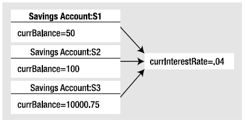

A C# class may define any number of static members using the static keyword. When you do so, the member in question must be invoked directly from the class level, rather than from an object reference. To illustrate the distinction, consider your good friend System.Console. As you have seen, you do not invoke the WriteLine() method from the object level:
// Error! WriteLine() is not an object level method! Console c = new Console(); c.WriteLine("I can't be printed...");
but instead simply prefix the class name to the static WriteLine() member:
// Correct! WriteLine() is a static method. Console.WriteLine("Thanks...");
Simply put, static members are items that are deemed (by the class designer) to be so commonplace that there is no need to create an instance of the type when invoking the member. While any class can define static members, they are most commonly found within "utility classes." For example, if you were to use the Visual Studio 2010 object browser (via the View > Object Browser menu item) to view the System namespace of mscorlib.dll, you will see that all of the members of the Console, Math, Environment, and GC classes (among others) expose all of their functionality via static members.
Assume you have a new Console Application project named StaticMethods and have inserted a class named Teenager that defines a static method named Complain(). This method returns a random string, obtained in part by calling a static helper function named GetRandomNumber():
class Teenager { public static Random r = new Random(); public static int GetRandomNumber(short upperLimit) { return r.Next(upperLimit); } public static string Complain() { string[] messages = {"Do I have to?", "He started it!", "I'm too tired...", "I hate school!", "You are sooooooo wrong!"}; return messages[GetRandomNumber(5)]; } }
Notice that the System.Random member variable and the GetRandomNumber() helper function method have also been declared as static members of the Teenager class, given the rule that static members such as the Complain() method can operate only on other static members.
Note Allow me to repeat myself: static members can operate only on static data and call static methods of the defining class. If you attempt to make use of nonstatic class data or call a nonstatic method of the class within a static member's implementation, you'll receive compile-time errors.
Like any static member, to call Complain(), prefix the name of the defining class:
static void Main(string[] args) { Console.WriteLine("***** Fun with Static Methods *****\n"); for(int i =0; i < 5; i++) Console.WriteLine(Teenager.Complain()); Console.ReadLine(); }
In addition to static methods, a class (or structure) may also define static field data such as the Random member variable seen in the previous Teenager class. Understand that when a class defines nonstatic data (properly referred to as instance data), each object of this type maintains an independent copy of the field. For example, assume a class that models a savings account is defined in a new Console Application project named StaticData:
// A simple savings account class. class SavingsAccount { public double currBalance; public SavingsAccount(double balance) { currBalance = balance; } }
When you create SavingsAccount objects, memory for the currBalance field is allocated for each object. Static data, on the other hand, is allocated once and shared among all objects of the same class category. To illustrate the usefulness of static data, add a static point of data named currInterestRate to the SavingsAccount class, which is set to a default value of 0.04:
// A simple savings account class. class SavingsAccount { public double currBalance; // A static point of data. public static double currInterestRate = 0.04; public SavingsAccount(double balance) { currBalance = balance; } }
If you were to create three instances of SavingsAccount in Main() as follows:
static void Main(string[] args) { Console.WriteLine("***** Fun with Static Data *****\n"); SavingsAccount s1 = new SavingsAccount(50); SavingsAccount s2 = new SavingsAccount(100); SavingsAccount s3 = new SavingsAccount(10000.75); Console.ReadLine(); }
the in-memory data allocation would look something like Figure 5-3.
Figure 5-3 Static data is allocated once and shared among all instances of the class
Let's update the SavingsAccount class to define two static methods to get and set the interest rate value:
// A simple savings account class. class SavingsAccount { public double currBalance; // A static point of data. public static double currInterestRate = 0.04; public SavingsAccount(double balance) { currBalance = balance; } // Static members to get/set interest rate. public static void SetInterestRate(double newRate ) { currInterestRate = newRate; } public static double GetInterestRate() { return currInterestRate; } }
Now, observe the following usage:
static void Main(string[] args) { Console.WriteLine("***** Fun with Static Data *****\n"); SavingsAccount s1 = new SavingsAccount(50); SavingsAccount s2 = new SavingsAccount(100); // Print the current interest rate. Console.WriteLine("Interest Rate is: {0}", SavingsAccount.GetInterestRate()); // Make new object, this does NOT 'reset' the interest rate. SavingsAccount s3 = new SavingsAccount(10000.75); Console.WriteLine("Interest Rate is: {0}", SavingsAccount.GetInterestRate()); Console.ReadLine(); }
The output of the previous Main() is seen here:
***** Fun with Static Data ***** In static ctor! Interest Rate is: 0.04 Interest Rate is: 0.04
As you can see, when you create new instances of the SavingsAccount class, the value of the static data is not reset, as the CLR will allocate the data into memory exactly one time. After that point, all objects of type SavingsAccount operate on the same value.
When designing any C# class, one of your design challenges is to determine which pieces of data should be defined as static members, and which should not. While there are no hard and fast rules, remember that a static data field is shared by all objects. Therefore, if you are defining a point of data that all objects should share between them, static is the way to go.
Consider what would happen if the interest rate variable were not defined using the static keyword. This would mean every SavingsAccount object would have its own copy of the currInterestRate field. Now, assume you created 100 SavingsAccount objects, and need to change the interest rate. That would require you to call the SetInterestRateObj() method 100 times! Clearly, this would not be a very useful way to model shared data. Again, static data is perfect when you have a value that should be common to all objects of that category.
Recall that constructors are used to set the value of an object's data at the time of creation. Thus, if you were to assign a value to a static data member within an instance-level constructor, you may be surprised to find that the value is reset each time you create a new object! For example, assume you have updated the SavingsAccount class as follows:
class SavingsAccount { public double currBalance; public static double currInterestRate; // Notice that our constructor is setting // the static currInterestRate value. public SavingsAccount(double balance) { currInterestRate = 0.04; currBalance = balance; } ... }
If you execute the previous Main() method, you would see that that the currInterestRate variable is reset each time you create a new SavingsAccount object, and it is always set to 0.04. Clearly, setting the values of static data in a normal instance level constructor sort of defeats the whole purpose. Every time you make a new object, the class level data is reset! One approach to setting a static field is to use member initialization syntax, as you did originally:
class SavingsAccount { public double currBalance; // A static point of data. public static double currInterestRate = 0.04; ... }
This approach will ensure the static field is assigned only once, regardless of how many objects you create. However, what if the value for your static data needed to be obtained at runtime? For example, in a typical banking application, the value of an interest rate variable would be read from a database or external file. To perform such tasks requires a method scope such as a constructor to execute the code statements.
For this very reason, C# allows you to define a static constructor, which allows you to safely set the values of your static data. Consider the following update:
class SavingsAccount { public double currBalance; public static double currInterestRate; public SavingsAccount(double balance) { currBalance = balance; } // A static constructor! static SavingsAccount() { Console.WriteLine("In static ctor!"); currInterestRate = 0.04; } ... }
Simply put, a static constructor is a special constructor that is an ideal place to initialize the values of static data when the value is not known at compile time (e.g., you need to read in the value from an external file or generate a random number). Here are a few points of interest regarding static constructors:
Given this modification, when you create new SavingsAccount objects, the value of the static data is preserved, as the static member is set only one time within the static constructor, regardless of the number of objects created.
It is also possible to apply the static keyword directly on the class level. When a class has been defined as static, it is not creatable using the new keyword, and it can contain only members or fields marked with the static keyword. If this is not the case, you receive compiler errors.
Note Class or structures that only expose static functionality are often termed utility classes. When designing a utility class, it is good practice to apply the static keyword to the class definition.
At first glance, this might seem like a fairly useless feature, given that a class that cannot be created does not appear all that helpful. However, if you create a class that contains nothing but static members and/or constant data, the class has no need to be allocated in the first place. Consider the following new static class type:
// Static classes can only // contain static members! static class TimeUtilClass { public static void PrintTime() { Console.WriteLine(DateTime.Now.ToShortTimeString()); } public static void PrintDate() { Console.WriteLine(DateTime.Today.ToShortDateString()); } } <p>Given that this class has been defined with the static keyword, you cannot create an instance of TimeUtilClass using the new keyword. Rather, all functionality is exposed from the class level:</p> static void Main(string[] args) { Console.WriteLine("***** Fun with Static Data *****\n"); // This is just fine. TimeUtilClass.PrintDate(); TimeUtilClass.PrintTime(); // Compiler error! Can't create static classes! TimeUtilClass u = new TimeUtilClass (); ... }
Before the introduction of static class declaration (introduced in .NET 2.0), the only way to prevent the creation of a class that only exposed static functionality was to either redefine the default constructor using the private keyword or mark the class as an abstract type using the C# abstract keyword. Consider the following approaches:
class TimeUtilClass2 { // Redefine the default ctor as private // to prevent creation. private TimeUtilClass2 (){} public static void PrintTime() { Console.WriteLine(DateTime.Now.ToShortTimeString()); } public static void PrintDate() { Console.WriteLine(DateTime.Today.ToShortDateString()); } } // Define type as abstract to prevent // creation. abstract class TimeUtilClass3 { public static void PrintTime() { Console.WriteLine(DateTime.Now.ToShortTimeString()); } public static void PrintDate() { Console.WriteLine(DateTime.Today.ToShortDateString()); } }
While these constructs are still permissible, the use of static classes is a cleaner solution and more type-safe, given that the previous two techniques allowed nonstatic members to appear within the class definition without error. This would be a big problem! If you had a class that was no longer creatable, you would have a chunk of functionality (e.g., all the non-static items) which could not be used!
At this point in the chapter you hopefully feel comfortable defining simple class types containing constructors, fields, and various static (and nonstatic) members. Now that you have the basics under your belt, you can formally investigate the three pillars of object-oriented programming.